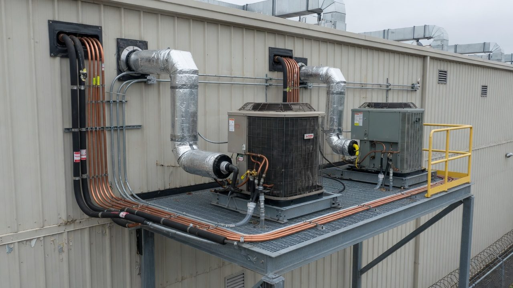
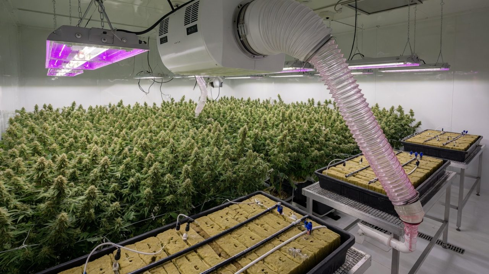
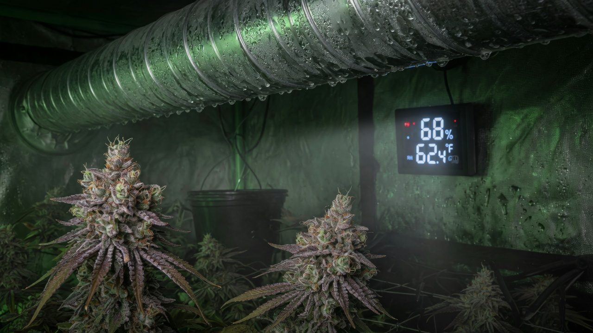
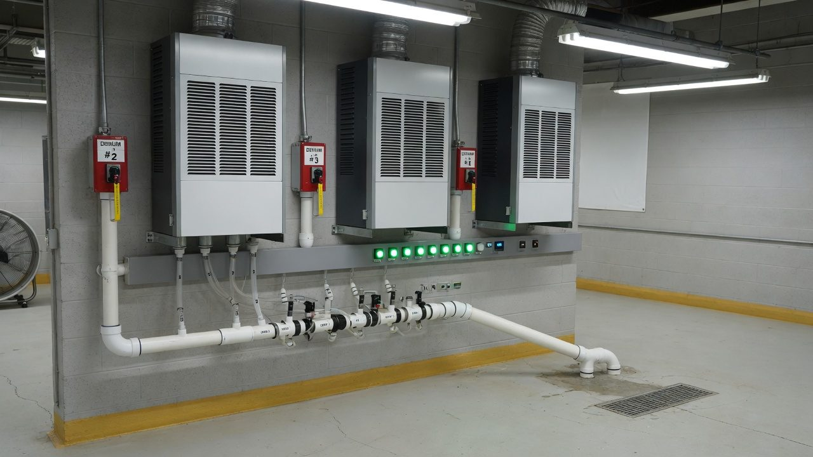

HVAC and dehumidification: the machinery of climate
Every watt you put into a grow room comes back out as heat, and nearly every litre you irrigate comes back out as vapour. The climate plant is the return path for both. This is how to size it, choose it, run it, and survive the night it fails.
The other half of the machine
A grow room is a machine that turns electricity into light, light into plant, and water into vapour. The lights are the half everyone budgets for. The climate plant, cooling, heating, dehumidification, is the half that hauls the heat and the water back out, every hour of every day, and it typically eats 30–60% of an indoor facility’s energy bill[1].
When it’s sized right you barely think about it. When it’s guessed, a mini-split off a BTU chart and a dehumidifier that looked big in the shop. You find out in week 6 of flower, at 2 a.m., when the room is cold, saturated, and growing Botrytis instead of flower.
This paper is written for someone speccing their first serious room or sanity-checking a mechanical quote. No refrigeration background assumed. By the end you should be able to do your own load arithmetic, read a dehumidifier spec sheet with suspicion, and explain exactly why the humidity pins to 85% the moment the lights go out.
1. Every watt in becomes heat. Lights, fans, pumps and dehumidifiers: in a sealed insulated room, all of it ends up as heat the cooling has to remove. 2. Every litre in must leave. As runoff down the drain, a little as plant tissue, and the rest as vapour your equipment must condense back to liquid. Sizing a climate system is just doing this accounting honestly.

Accuracy, self-review, and grain-of-salt notes
We've gone to great lengths to keep these guides honest. One of the main ways we do that is self-review: we actively look for claims that are subjective, only lightly backed by literature, or based on grower practice rather than a controlled study — and we call those out instead of dressing them up as settled science.
Often there simply is no paper for the decision you're making. In those cases we're drawing on what other growers report and what has worked in our own rooms. That can still be useful — but it is not a lab proof. Do what works for your plants, your room, and your meters. If a table disagrees with your crop, believe the crop and log the difference.
- Core definitions and measurement units used in the paper
- Safety-critical limits where occupational or standards sources are cited
- Numeric stage targets (light, climate, feed) as starting bands, not laws
- SOPs that work in many rooms but need your genetics and meters
- Any single-number 'guaranteed' yield or potency claim without a multi-site trial
- Controller setpoints copied from another facility without re-calibration
See something glaringly wrong? Tell us and we'll fix it. Please open a GitHub issue with the paper name and what looks off (include a source if you have one): Report an accuracy issue. Local law, labels, and licences always override any recipe here. Inline notes labelled grain of salt flag the highest-risk over-trust points in the text.
Eight words that unlock every spec sheet
Two loads, two exits: sensible and latent
A comfort air conditioner in an office does one job: remove dry heat. A grow room asks for two: remove heat and remove water. Engineers split these as the sensible load (temperature) and the latent load (moisture), and grow rooms are unusual because the latent side rivals or exceeds the sensible side for much of the cycle, a ratio almost no comfort-cooling equipment is built for[2][4].
Where the sensible load comes from: the lights, overwhelmingly. In an insulated, sealed room, essentially every watt of electrical input becomes heat that the cooling plant must remove, and lighting is the single largest share[2][3]. Dehumidifiers, fan motors, pumps and people add the rest.
Where the latent load comes from: the plants. Transpiration is the latent load: of the water delivered to the root zone, roughly 95%+ passes up through the plant and out the stomata as vapour, Desert Aire’s engineering note puts it near 99% of water taken up by the roots[2], and facility engineers design on 80–95% of total irrigation returning to the air[7]. Your crop is not decoration sitting inside the climate system. Your crop is the humidifier, running at hundreds of litres a day, powered by your lights and throttled by VPD[5].
Evaporating water absorbs heat. A transpiring canopy is a giant evaporative cooler. So the air temperature rises less than the lights’ wattage suggests, and beginners conclude the heat “wasn’t that bad”. It didn’t leave. It moved into the vapour, and you pay it back with interest at the coil that condenses that vapour out. Total heat rejected always equals total watts in; the plants only decide how it’s split between the two channels.
Counting the watts: an example room
Everything from here on uses one worked room so the numbers stay honest: 40 m² of flowering canopy (~430 sq ft), 10 × 700 W LED fixtures, sealed and CO₂-enriched, insulated internal walls, two 800 W dehumidifiers, ~500 W of circulation fans and pumps, two crew working in it. Swap in your own numbers, the method is the point.
| Load | Type | In the example room | Notes |
|---|---|---|---|
| Grow lights | Sensible | 7.0 kW | The dominant load; scales with installed W[3] |
| Dehumidifiers | Sensible | 1.6 kW draw + condensing heat | Run mostly at night. They are the night heater |
| Fans, pumps, controls | Sensible | ~0.5 kW | Small individually, never zero |
| People | Sensible + latent | ~0.1 kW each | ≈400 BTU/h per person[6] |
| Envelope (walls, roof) | Sensible | ≈0 (insulated internal room) | Real for containers, sheds, top floors, do not assume zero there |
| Transpiration | Latent | ~175 L/day (next section) | The latent load, full stop[2] |
| Media + wet surfaces | Latent | Small share | Evaporation from slab faces, trays, wet floors[2] |
| Ventilation air | Both | ≈0 (sealed room) | In vented rooms, humid outside air is a real latent load |
A propane or natural-gas CO₂ burner adds heat and water, combustion produces roughly 1.5 kg of water vapour per kg of propane burned, straight into your latent load. Bottled or bulk CO₂ adds neither. If you run burners, both sides of your load calc grow.

Water in equals water to remove
Here is the single most useful sizing fact in this paper: your dehumidification requirement is written by your irrigation schedule. Not by room volume, not by plant count charts, by litres per day. Water that goes in and doesn’t leave down the drain leaves through the air[8][7].
- 1Count the water in40 m² of canopy × 6 L/m²/day at mid-flower = 240 L/day. Your irrigation controller already knows this number exactly.
- 2Subtract collected runoff25% runoff captured to drain = 60 L that never touches the air. 240 − 60 = 180 L/day stays in the room. (Runoff left standing in trays evaporates, then it’s latent load again. Drain it.)
- 3Subtract what the plant keepsPlant tissue holds only a few percent of uptake, call it 5 L/day. The rest transpires[2]. ≈175 L/day becomes vapour.
- 4Convert for spec sheets175 L ÷ 0.473 = ≈370 US pints/day. Quest’s shortcut (gallons fed minus drained, times 8) lands on the same answer[8].
You do not need to model transpiration. You already meter it. Litres in (controller log) minus litres of runoff (measure it for one representative day) is your daily latent load, per room, per crop stage. It is better data than any consultant’s estimate, and it’s free. Log it every cycle; it also tells you when the crop is drinking abnormally, which is a plant-health signal, not just an HVAC one.
BTU-per-light folklore vs an actual load calc
Every forum will tell you “3,000–4,000 BTU per 1,000 W of light”. Here’s the secret: that isn’t horticultural wisdom, it’s a unit conversion. 1 W of electricity makes 3.412 BTU/h of heat, always, by physics[6]. The folklore is roughly right about the lights and silent about everything else. Which is how rooms end up 20–30% short.
- 1List every watt in the roomLights 7,000 W. Dehumidifiers 1,600 W. Fans and pumps 500 W. Two crew ≈240 W[6]. Envelope gain: ~0 here, real if your room has a hot roof or sun-struck wall.
- 2Sum it7,000 + 1,600 + 500 + 240 ≈ 9.3 kW of sensible load.
- 3Convert to trade units9.3 kW × 3,412 = ≈31,700 BTU/h = ≈2.6 tons of cooling.
- 4Add margin, not hope20–25% covers hot ambients, dirty coils and derate with age[6]: spec ≈11.6 kW (≈40,000 BTU/h, ≈3.3 tons).
- 5Split it across unitsTwo smaller units beat one big one: staged capacity for light loads, and a failure loses half your cooling, not all of it (Section 12).
- Rooms that exhaust air through the lights or to outside, part of the heat never enters the room, so folklore oversizes. (This is where the old “3 BTU/W for vented HPS” number came from.)
- Non-insulated spaces, containers, garages, top floors under hot roofs. Envelope load can add kilowatts the folklore never saw.
- Forgetting the dehumidifiers. They add their draw and return the latent heat of every condensed litre as sensible heat. An AC sized without them fights the dehus all afternoon.
- Treating cooling capacity as latent capacity, a nameplate kW of cooling is sensible + latent combined; how much of it does moisture work depends on coil temperature and airflow. The next section sizes moisture properly.
From litres per day to a dehumidifier order
Dehumidifier sizing is the water balance from Section 05 plus two corrections everyone skips: when the moisture arrives, and what the machine actually removes at your conditions rather than at the rating point on the box.
- 1Start from the vapour loadExample room: ≈175 L/day ≈ 370 pints/day total.
- 2Split day from nightTranspiration doesn’t stop in the dark, stomata close partially, media keeps evaporating. Assume 70/30: day 122 L over 12 h (≈10 L/h), night 53 L over 12 h (≈4.4 L/h). Check the split against your own condensate volumes and correct it. It varies with cultivar and night climate.
- 3Day dutyWith lights on, the AC coils condense a share of the moisture while cooling; dehumidifiers top up. This is the easy shift.
- 4Night duty, the sizing caseWith lights off there is no sensible load, the AC stops, and its incidental moisture removal stops with it[2]. The dehumidifiers alone must carry 4.4 L/h. That is 105 L/day of removal rate.
- 5Derate the nameplateRatings are quoted warm, commonly 26.7 °C / 60% RH (80 °F), and refrigerant units remove less as the room cools[10]. If the manufacturer’s curve shows ~⅔ of nameplate at your 19 °C night, you need ≈160 L/day of nameplate running to hold the night: e.g. two 80 L/day units flat out.
- 6Then apply N+1Two units exactly covering the night means one failure ends the crop. Fit three 80s (or two 120s) so any single unit can die on a Saturday night without drama (Section 12).
| Canopy | Water in (6 L/m²/day) | Vapour to remove | In pints |
|---|---|---|---|
| 10 m² (tent-to-small room) | 60 L/day | ≈44 L/day | ≈92 ppd |
| 20 m² | 120 L/day | ≈87 L/day | ≈185 ppd |
| 40 m² (example room) | 240 L/day | ≈175 L/day | ≈370 ppd |
| 80 m² | 480 L/day | ≈349 L/day | ≈738 ppd |
Per fixture, the example works out to 17.5 L (≈37 pints) per light per day, a handy pub-quote number, but notice it’s downstream of the irrigation schedule, not a property of the light. Quest’s field guidance of 0.5–2 pints per square foot of canopy per day brackets the same range[9], our room computes to ~0.86 pints/sq ft. When a rule of thumb and your arithmetic agree, you can trust the arithmetic; when they disagree, trust the arithmetic anyway.
Everything above assumes a sealed, recirculating room, the norm for CO₂-enriched flower. A vented room exhausts moist air instead of condensing it, so dehu requirements drop but you inherit the outdoor climate: in a humid summer (Auckland in February, most of Queensland) intake air can add latent load rather than remove it. Vented sizing starts from your local psychrometrics, not from this table.
Equipment classes: what actually gets installed
Four families of cooling, plus the dehumidifiers that bolt onto all of them. Engineering firms describe the same ladder: packaged DX with standalone dehus at entry level, DX with hot-gas reheat in the middle, chilled water at scale[3].
Refrigerant line to a wall or ceiling head. Cheap, available everywhere, installed in a day. Cooling-biased: latent removal is incidental, control is a ±1–2 °C wall thermostat, and there’s no reheat, so it overcools while dehumidifying. Right answer for veg rooms, dry rooms and small flower rooms with standalone dehus doing the moisture work.
One factory cabinet outside the envelope, ducted supply and return. Direct-expansion (DX) cooling, real airflow, service access without entering the grow. The workhorse tier for single rooms and small facilities, still pair it with dehumidifiers, and prefer staged or inverter compressors over single-stage[3].
A central chiller makes cold water; insulated loops feed fan-coil units in each room. Scales across many rooms, concentrates redundancy at the plant (two chillers backing the whole facility), and with heating-water or reheat coils gives genuine independent temperature and humidity control[3]. Needs real mechanical design. This is an engineered system, not a purchase.
Purpose-built cabinets that cool, dehumidify and reheat in one sequenced box, sized from your load calc and controlled on dew point. Built precisely for the lights-off problem. Premium capex; strongest case in tightly controlled flower and drying rooms where climate misses cost real money[1].
Standalone vs ducted dehumidifiers. Standalone (hang-above-canopy or floor) units are cheap, movable and simple, but they dump their heat and noise in the room and their condensate wants managing. Ducted/inline units sit outside the canopy, plumb their drains properly, and share the air-handling path, at higher install cost. Either way: plumb the drain. A bucket is a humidifier with extra steps.
| Refrigerant dehumidifier | Desiccant dehumidifier | |
|---|---|---|
| How it works | Pulls air over a cold coil; vapour condenses; drains as liquid | Adsorbs vapour into a desiccant wheel; regenerated with a heater |
| Sweet spot | Warm rooms, 18–30 °C, i.e. flower rooms | Cool rooms, keeps full capacity where coils frost[10] |
| Cold behaviour | Capacity falls as the room cools; coils can ice below ~15 °C | Unbothered by cold; works to near-freezing[10] |
| Heat added to room | Compressor draw + latent heat of condensed water | More, regeneration heat lands in the airstream (+3–5 °C typical)[10] |
| Typical grow use | Flower and veg rooms, the default | Cold drying/curing rooms (16–18 °C), winter spaces |

The lights-off spike: why RH jumps at night
Watch any grow room’s trend graph and you’ll see the same signature: the moment the lights cut, RH leaps 15–25 points in under an hour. Three things happen at once, and every one of them pushes the same direction:
- The sensible load vanishes. 7 kW of light heat disappears in one second. The AC, which was condensing moisture as a side effect of cooling, ramps to zero and takes its moisture removal with it[2][9].
- The air cools, so RH rises with no new water at all. Air’s capacity to hold vapour roughly halves per 10 °C drop. Cool the example room’s 26 °C / 55% air to 19 °C and it sits at ≈84% RH, same grams of water, smaller container. (Quest’s version of the same arithmetic: 24 °C at 57% becomes ≈80% at 18 °C[9].)
- The crop keeps transpiring. Slower in the dark, but far from zero, and wet media keeps evaporating all night. In the example room that’s still ≈4.4 L of new vapour every hour.
Why this window matters so much: bud rot (Botrytis cinerea) thrives in cool, near-saturated, still air, and dense late-flower colas hold exactly that microclimate internally[11]. The room hits its highest RH at its lowest temperature, dew forms on whatever surface sits below the dew point (at 26 °C / 55%, that’s any surface under ~16 °C, duct skins, exterior walls, cold glass), and the crop is at its most vulnerable stage. The night latent capacity you sized in Section 07 is not a comfort feature. It is mould control.
- Pre-dry the room: run dehumidifiers hard for the final hour of lights-on so the room enters the night at the bottom of its RH band, with headroom.
- Ramp, don’t step: if your controller supports it, stage the lights down over 15–30 minutes so the AC and dehus track the transition instead of getting ambushed by it.
- Use the dehu heat: a dehumidifier returns ~0.68 kWh per litre plus its own draw as heat, in the example room that’s ~4.6 kW through the night, usually most of what’s needed to hold 19 °C. Free night heating, already paid for.
- Alarm on rate-of-rise: RH climbing faster than your modelled spike means a dehu has dropped out. You want that text at 22:10, not the smell at 07:00.
If you ever see droplets on walls, ducts or fixtures at lights-off, you are past warnings: liquid water in a Botrytis room. That night: raise the night temperature setpoint a degree (warmer air holds the same water at lower RH), run every dehu you own, and open the canopy with airflow. Then fix the capacity shortfall before the next dark period, not before the next crop.
HVAC airflow and circulation fans are different jobs
The climate plant conditions air; the room still has to distribute it. Two systems, two jobs: the air handling loop delivers conditioned air and drags moist warm air back to the coils, sealed grow rooms typically turn the room’s air over 20–40 times per hour, recirculating ~100% of it to keep CO₂ and keep outside contaminants out[3], while circulation fans stir the canopy so no leaf sits in its own humid boundary layer (that story is the airflow design paper).
- Supply high, return low. Dry supply air is less dense paths matter less than geometry: pushing supply across the ceiling and pulling return at floor level forces air through the canopy, where the load actually is.
- Don’t short-circuit the air path. A supply diffuser blowing straight into a nearby return conditions the duct, not the room. Sensors near that path read beautifully while the far corner rots.
- Place dehumidifiers deliberately. Discharge aimed along a wall or aisle, not blasting one bench of plants with hot dry air; intake sitting in the moist zone, not in its own dry plume, a unit re-breathing its own discharge reads a dry room and idles while the canopy stays wet.
- Watch compressor short-cycling. A grossly oversized single-stage AC satisfies the thermostat in minutes and shuts down before the coil ever gets cold and wet enough to condense much. You get temperature control and no dehumidification, plus compressor wear. Staged or inverter capacity, plus minimum-run timers, is the fix.
Condensate: manage it, meter it, maybe reuse it
Everything the coils and dehumidifiers condense has to go somewhere, in the example room, ~175 L/day of it. That flow is a maintenance liability, a free instrument, and a potential water resource, in that order.
- A maintenance liability: every unit needs a trapped, sloped drain or a reliable condensate pump with a float cut-out. Pans and trays grow biofilm and drip on canopy; blocked drains shut units down (good ones) or overflow into ceilings (the rest). Tray and drain cleaning is an IPM task, not optional housekeeping.
- A free instrument: metered condensate is your measured latent load. Falling condensate at constant irrigation means either runoff went up or removal capacity went down, both worth knowing by breakfast.
- A resource: most of the irrigation water you paid for comes back as near-distilled condensate, and it can be captured and reused[7].
Under GACP-style quality systems and most medicinal licensing regimes, irrigation water quality must be controlled and documented. If condensate re-enters the crop, its treatment train and test results belong in your water SOP alongside the source water, decide and document before the auditor asks[12].

Redundancy: the week-6 dehumidifier funeral
Run the failure before it runs you. Example room, week 6, 23:00: two 80 L/day units are carrying the night at ≈⅔ nameplate. One trips on a failed capacitor. Do the arithmetic: the room’s ~150 m³ of air at 19 °C / 60% RH can only absorb about one more litre of water before saturation. And the crop is adding ≈4.4 L every hour. The surviving unit removes barely half of that. RH is against the ceiling within the hour, condensation starts on the coldest surfaces, and nothing else in the room can help because the AC has no sensible load to run against. This is not a slow drift you catch at the morning walk-through. It runs away in minutes.
N+1 is the fix, and it’s exactly what it sounds like: N units cover the design load; you install one more, so any single failure leaves the room fully served. Apply it in order of what kills the crop fastest:
- Night dehumidification first. No fallback exists, when a dehu dies at night, nothing else removes water. Three 80s where two carry the load.
- Cooling second. Day cooling failure has a fallback: shed the load. Interlock the lights so a cooling fault dims them to 50% or kills them. You can afford a lost day of photosynthesis; you cannot afford 40 °C over a full photoperiod. Two smaller ACs also beat one big one here.
- Controls and alarms last but not least, the redundancy you don’t know has failed doesn’t exist. Alarms must reach a human who can act, and must survive the same power event that caused the fault.
RH runs away in minutes (arithmetic above). Detect: RH rate-of-rise alarm. Survive: N+1 capacity, auto-restart after trip, a spare capacitor on the shelf.
9 kW keeps arriving with nowhere to go; a sealed room climbs degrees per hour. Detect: temp alarm + current sensor on the unit. Survive: lights interlock sheds the load automatically; second unit carries a de-rated day.
Water where it shouldn’t be; float switch stops the unit. Which quietly becomes a capacity failure. Detect: unit-stopped alarm, weekly tray inspection. Survive: plumbed drains, floats tested monthly, trays on the cleaning roster.
Starved airflow (dirty filter), low charge, or a too-cold room. Unit runs, removes nothing, then dumps meltwater. Detect: runtime with no condensate flow. Survive: filter schedule, defrost-capable units, desiccant in genuinely cold spaces[10].
The controller faithfully chases fiction; the room follows. Detect: monthly cross-check against a decent handheld at canopy height. Survive: two sensors per room and control on the worse reading.
Everything stops; what restarts? Compressors need delay timers, some dehus wake in standby. A room can look powered and be doing nothing. Detect: post-outage checklist, alarms on a UPS. Survive: test the black-start on purpose, once, before summer does it for you.
Once per cycle, in early veg when stakes are low: kill each climate unit for an hour and watch the trends. You’ll learn your real runway (minutes? hours?), whether the alarms fire, and whether the auto-restarts work. Cheap insurance, and the only way to know your N+1 is real rather than nameplate.
Staging, deadbands, and machines that don't fight
A grow room runs heating, cooling and dehumidification within metres of each other, and two of the three make the third’s job worse: cooling raises RH; dehumidifying adds heat. Un-coordinated, they fight, the AC overcools, RH climbs, the dehu heats, the AC returns, around and around, burning power and cycling compressors. The cure is sequencing, not bigger hardware.
- Deadbands: control to a band, not a knife-edge. Day 26 °C ±0.5, RH 55–60% is a structure (yours will differ, setpoints belong to the crop, see the VPD paper; cannabis photosynthesis runs happily around 25–30 °C[13]). Tight bands feel professional and mostly buy you equipment cycling.
- Sequencing: heat and cool must never run together (lockout between them); dehumidification may run alongside either, but its reheat should come from the machine, hot-gas reheat, not from the heaters fighting the AC[3].
- Day/night setpoints with ramps: separate targets for lights-on and lights-off, connected by 15–30 minute ramps so the transition is driven, not endured (Section 09).
- Control moisture on dew point where you can: %RH swings with every temperature wobble even when the water content hasn’t changed; dew point tracks the actual grams. At the day/night transition, dew-point control is dramatically calmer.
- Sensor placement is a control decision: an aspirated or well-shielded sensor at canopy height, out of any supply jet or dehu plume. The controller can only be as honest as its sensor (Section 12’s quiet killer).
Efficiency: COP, reheat, and heat you already own
Climate is where the money goes. Energy runs 30–60% of indoor operating expense[1], and life-cycle analysis of US indoor production found environmental control the dominant driver of both energy use and emissions, 2,300–5,200 kg CO₂e per kg of dried flower depending on location[14]. Every design choice in this section moves that number.
- Hot-gas reheat is the flagship move. Dehumidification means cooling air below its dew point, then warming it back so you don’t overcool the room. Electric reheat pays full price (COP 1) for heat you just paid to remove. Hot-gas reheat recycles the compressor’s own rejected heat to do the rewarming, near-free reheat, standard on mid-tier DX and integrated units[3].
- Right-size rather than oversize. Oversized single-stage equipment short-cycles: worse dehumidification, worse efficiency, shorter compressor life. Margin belongs in staged capacity (two circuits, inverter drive), not in one heroic unit.
- LEDs shift the ratio, not the rules. At equal PPFD, LEDs draw fewer watts, so the sensible load drops, but the crop transpires much the same, so the latent load doesn’t. LED rooms are latent-dominated rooms: expect the dehumidifier spec, and the winter heating question, to matter more, not less.
- Reuse heat you already own. Dehu heat holds the night temperature (Section 09); condenser heat can pre-warm dry rooms or water. Rejecting heat outside all winter while running COP-1 heaters inside is a bill you chose.
- Maintenance is an efficiency program: dirty filters and fouled coils quietly tax capacity and COP for months before anything actually fails. Filters monthly; coils each cycle.
Troubleshooting: symptom to first move
| Symptom | Likely cause | First moves |
|---|---|---|
| RH pins 80%+ every lights-off | Night latent load exceeds real (derated) dehu capacity; AC idle at night | Measure water-in minus runoff vs installed capacity at night temp (Sections 05–07); pre-dry the last hour; add nameplate |
| Room creeps hot all afternoon, AC never stops | Undersized vs full equipment load, dirty coil/filter, or low refrigerant | Redo the watt count (Section 06); wash coils, change filters; then call the fridgie |
| AC cycles fast; temp fine, RH never falls | Oversized single-stage unit short-cycling. Coil never stays cold long enough to condense | Minimum-run timers; staged/inverter capacity; let dehus own the moisture |
| Room cold and humid (clammy) | Cooling running without reheat, classic mini-split-as-dehumidifier | Raise cooling setpoint; add dehu with reheat (or hot-gas reheat unit); heat and dehumidify separately |
| Condensation on ducts/walls at night | Surfaces below the air's dew point | More night dehu capacity; raise night temp a touch; insulate cold surfaces; verify with an IR thermometer |
| Dehu runs constantly, tank barely fills | Room colder than rating point, iced coil, or unit re-breathing its own dry plume | Check coil for frost and filter for dust; read the capacity curve at your temp; reposition; desiccant if the space is genuinely cold |
| Musty smell, stains below units | Blocked condensate pans/traps, biofilm in trays | Clean and disinfect trays; flush drains; float switch working? add to weekly roster |
| One corner always wetter, mould starts there | Air-distribution dead zone | Fix supply/return geometry (Section 10); add circulation; thin the canopy; verify with a handheld meter |
| Sensors read fine but buds still rot | Wall sensor lying about the canopy microclimate | Measure inside the canopy at cola height; control on dew point; more through-canopy airflow[11] |
Follow the watt, follow the litre
A grow room is an accounting problem wearing a plant costume. Follow the watt: every kilowatt of equipment becomes a kilowatt of heat; count them and you have the sensible load. Follow the litre: every litre irrigated, minus drain, becomes vapour; count them and you have the latent load. The climate plant is just the return path for both, and it must work at 02:00 in the dark as well as at 14:00 under full light.
- Count watts → sensible load. Folklore counts only the lights; you count everything (Section 06).
- Count litres → latent load. Water in minus runoff, converted to pints for the spec sheet (Sections 05, 07).
- Night is the design case: no sensible load, no AC help, transpiration continuing. Size dehumidification for lights-off at your night temperature, derated from nameplate.
- N+1 the night dehumidification; interlock the lights to the cooling. Then break each unit on purpose once, and watch what happens.
- Control moisture (dew point) with deadbands and sequencing so the machines cooperate; ramp the day/night transition.
- Meter irrigation, runoff and condensate, the free, continuous load calculation that also tells you when the crop changes.
The climate plant is one subsystem of the room. Read it alongside the grow-room systems guide, the temperature, humidity and VPD paper for what the setpoints should actually be, and the airflow design paper for the last metre of air movement.
References
- Resource Innovation Institute (2019). Best practices guide: HVAC for cannabis cultivation & controlled environment agriculture (peer-reviewed industry guide from RII's Technical Advisory Council; energy is 30-60% of indoor operating expense; centralised CEA dehumidification substantially reduces operating cost). (industry/manufacturer or non-journal source) https://resourceinnovation.org/blog/riis-hvac-best-practices-guide-demystifies-approaches-to-efficient-cooling-and-dehumidification/
- Desert Aire. Grow room load determination. Application Note 25 (DA125) (lighting is the largest sensible load in indoor farming; latent load is transpiration plus evaporation from media, irrigation and wetted surfaces; ~99% of water delivered to the roots passes through the stomata as vapour; at lights-off a standard air conditioner satisfies the small sensible demand and shuts off before the moisture is removed). Manufacturer engineering note. (industry/manufacturer or non-journal source) https://www.desert-aire.com/resources/application-notes/grow-room-load-determination
- Streit L (IMEG Corp). Cannabis grow facility design 101, part 3: HVACD and air distribution. PHCP Pros (grow lights are the bulk of the sensible cooling load; latent load follows irrigation — water in equals water out; typical rooms run 20-40 air turns per hour with ~100% recirculation; equipment tiers from packaged DX plus dehumidifiers, through DX with hot-gas reheat, to chilled-water plants with reheat). Engineering trade article. (industry/manufacturer or non-journal source) https://www.phcppros.com/articles/16050-cannabis-grow-facility-design-101-part-3-hvacd-and-air-distribution
- HPAC Engineering. Latent loads matter: HVAC for cannabis grow facilities (transpiration returns most irrigation water to room air as vapour, the dominant dehumidification load; filters do not remove it). (industry/manufacturer or non-journal source) https://www.hpac.com/industrial/article/21270796/latent-loads-matter-hvac-for-cannabis-grow-facilities
- Grossiord C, Buckley TN, Cernusak LA, et al. (2020). Plant responses to rising vapor pressure deficit. New Phytologist 226(6):1550-1566. https://doi.org/10.1111/nph.16485
- Hydrobuilder Learning Center. Grow room air conditioner sizing guide (every watt of equipment makes ~3.41 BTU/h of heat; HPS folklore runs 3.5-4 BTU/W; dehumidifier draw returns ~100% as heat; ~400 BTU/h per person; add 20-30% margin; 1 ton = 12,000 BTU/h). Industry sizing guide. (industry/manufacturer or non-journal source) https://learn.hydrobuilder.com/grow-room-air-conditioner-sizing-buying-guide/
- Streit L (IMEG Corp). Cannabis grow facility design 101, part 2: water usage. PHCP Pros (80-95% of irrigation water is transpired and returns via the HVACD system as condensate from coils and dehumidifiers; condensate can be captured, retreated — typically through RO — and reused for irrigation). Engineering trade article. (industry/manufacturer or non-journal source) https://www.phcppros.com/articles/15572-cannabis-grow-facility-design-101-part-2-water-usage
- Quest Climate. Grow room dehumidifiers: perfect your setup (water in = water out sizing: gallons irrigated minus gallons drained, times 8 pints per gallon — e.g. 25 gal fed with 5 gal to drain = 160 pints/day to remove; plan dehumidification for worst-case days). Manufacturer application guide. (industry/manufacturer or non-journal source) https://www.questclimate.com/perfect-grow-room-dehumidifier/
- Quest Climate. Dehumidification 101 for cannabis growers (air conditioners dehumidify poorly and sit idle at lights-off, so dedicated dehumidifiers carry the overnight moisture; baseline 0.5-2 pints/day per square foot of canopy; cooling air raises its RH — a mid-70s °F room at ~57% RH lands near 80% when cooled to 65 °F; excess humidity drives Botrytis and powdery mildew). Manufacturer application guide. (industry/manufacturer or non-journal source) https://www.questclimate.com/dehumidification-101-cannabis-growers/
- Sylvane. Desiccant vs. refrigerant dehumidifiers: which is best for you? (refrigerant units condense moisture on a cold coil and lose capacity as the space cools, icing at low temperatures; desiccant wheels keep near-full capacity in cold rooms and add several degrees of regeneration heat to the airstream). Industry knowledge base. (industry/manufacturer or non-journal source) https://www.sylvane.com/blogs/knowledge-center/desiccant-vs-refrigerant-dehumidifiers
- Mahmoud M, BenRejeb I, Punja ZK, Buirs L, Jabaji S (2023). Understanding bud rot development, caused by Botrytis cinerea, on cannabis grown under greenhouse conditions. Botany / Can. J. Bot. 101(8). https://doi.org/10.1139/cjb-2022-0139
- Robinson T, Lisabeth K (Silver Bullet Water Treatment) (2020). Condensate recapture for cannabis cultivation facilities. National Cannabis Industry Association member blog (condensate is low-TDS with pH ~5.5-6.5 from dissolved CO2, but can carry VOCs, coil metals — lead, zinc, aluminium, copper — and microbes; treat with filtration plus UV/AOP disinfection before reuse, and baseline-test regularly). (industry/manufacturer or non-journal source) https://thecannabisindustry.org/member-blog-condensate-recapture-for-cannabis-cultivation-facilities-making-informed-decisions-to-save-resources-and-improve-efficiency/
- Chandra S, Lata H, Khan IA, ElSohly MA (2008). Photosynthetic response of Cannabis sativa L. to variations in photosynthetic photon flux densities, temperature and CO2 conditions. Physiol. Mol. Biol. Plants 14(4):299-306. https://pmc.ncbi.nlm.nih.gov/articles/PMC3550641/
- Summers HM, Sproul E, Quinn JC (2021). The greenhouse gas emissions of indoor cannabis production in the United States. Nature Sustainability 4:644-650 (life-cycle emissions of 2,283-5,184 kg CO2e per kg of dried flower depending on location; environmental control — HVAC and ventilation — among the dominant energy and emissions drivers alongside lighting and CO2 supply). https://doi.org/10.1038/s41893-021-00691-w
Citations marked in-text as [n] map to this list. Primary literature and official guidance except where noted. Cannabis tissue culture is strongly genotype-dependent, verify dilutions, hormone doses and local regulations against the primary sources before relying on them.